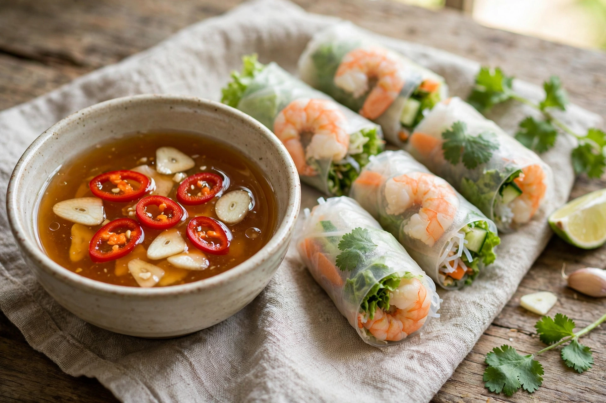

Nước chấm is a Vietnamese dipping sauce made primarily from fish sauce (nước mắm), water, sugar, and lime juice or vinegar, often with garlic and bird's eye chilies. The term can refer broadly to dipping sauces in Vietnamese cuisine, but most commonly denotes this sweet-sour diluted fish sauce.
A typical preparation dissolves sugar in warm water, then adds fish sauce and lime juice, finishing with finely minced garlic and sliced fresh chilies, which ideally float on the surface. Regional variations adjust the balance of sweet, sour, salty, and hot; southern versions tend to be sweeter. Shredded pickled carrot and daikon may be added for serving with dishes such as bánh xèo.
Nước chấm is served with a wide range of dishes, including chả giò (fried spring rolls), gỏi cuốn (fresh spring rolls), bánh xèo (savoury crêpes), cơm tấm (broken rice), and bún dishes such as bún thịt nướng, where it dresses the noodles. A similar sauce in the Philippines is called sawsawan.
See also: Fish sauce, Vietnamese cuisine.